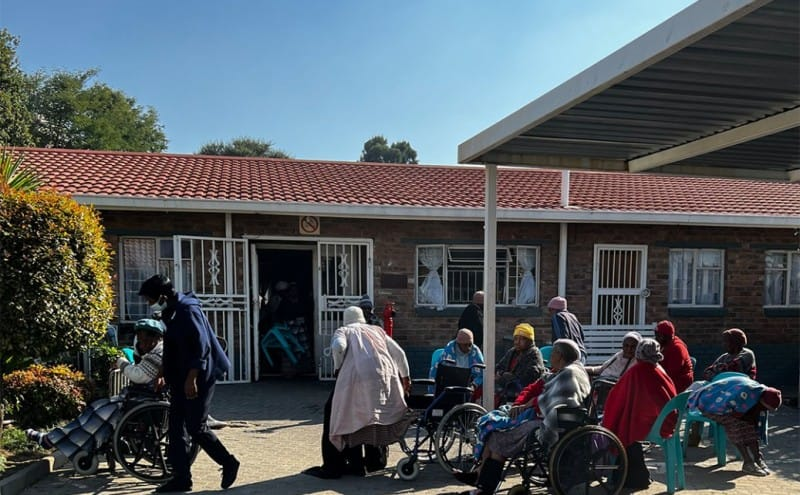

OLD AGE & DISABILITY CENTRE
Kwelano Bohloko
Supporting older persons and people living with disabilities.
A welcoming community space focused on dignity, support, participation and access to useful information.

Welcome to Kwelano Bohloko
Kwelano Bohloko Old Age and Disability Centre in Hlatlaganya, Mankweng, Polokwane, is committed to supporting older persons and people living with disabilities within the community.
This website explains our services and gives families, volunteers, donors and community partners an easier way to contact the centre.
Our Purpose
Promoting dignity, support, participation and wellbeing for older persons and people living with disabilities.
Read more about our purpose →Our Services
Explore community support, social activities, information, assistance and family support.
View our services →Support Our Work
Find out how you can volunteer, donate or become a community partner.
See how to support our work →Would you like to help or find out more?
Contact Kwelano Bohloko to ask a question, volunteer or discuss ways of supporting the centre.
Contact the Centre